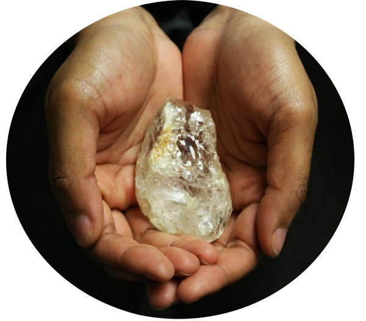

A Crystal in the Kitchen

In southwestern Baltimore City, Carroll Park encompasses the surviving acreage of Mount Clare, the showpiece estate of Charles Carroll the Barrister. The site is designated as a National Historic Landmark for its excellent Federal style architecture. Like all American plantations, Mount Clare was a predominantly black landscape, with African and African American people far outnumbering Caucasians. The historical record offers very little information about this majority of people who built the federal-style mansion, worked the Carroll farmland, brickyards and ironworks, and fed and clothed the Carroll family.
Over 30 years of excavations at Mount Clare uncovered a rich archaeological record. Investigations found the remains of the greenhouse (which inspired George Washington’s greenhouses at Mount Vernon), orchards, formal and kitchen gardens, and former additions to the main house that include an office and a kitchen. Investigations have not yet found the slave quarters. In 1986, while excavating the circa 1767 kitchen, archaeologists recovered a 4-inch-long, heavily worked, colorless crystal. This was later identified by archaeologist George Logan as an intentionally buried object, likely by a person from Africa or the diaspora. Based on its archaeological context, Logan believed that it was intentionally buried underneath the doorway of the kitchen.

There are several cultural and spiritual traditions in West Africa and the Caribbean in which objects that are believed to be imbued with ancestral spiritual power are buried under thresholds or by hearths, either to activate the object’s power or to protect it from being found. As Dr. Teresa Moyer explores in her book Ancestors of Worthy Life: Plantation Slavery and Black Heritage at Mount Clare, this discovery is very unusual. Crystals are uncommon in buried caches, particularly one as large as the one found at Mount Clare. Also unusual is the fact that this crystal was found in the kitchen of the mansion, where black and white people coexisted. Moyer posits that perhaps a cook buried the crystal as an act of protection against Margaret Carroll and the hired servants. If these interpretations are correct, this crystal is an example of the continuity of cultural and religious traditions in spite of forced assimilation, and represents the exertion of personal agency by a person who was allowed none.